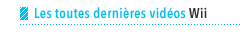

Wii
Expérience
Wii
Jeux
Wii
Developer's
Voice
Menu
Wii
Les Publicités Téléviséés de
Wii
Wii
Sports
Wii.com
Tab 1
Tab 2
Tab 3
12.08.2009
Iwata Demande: New Super Mario Bros. Wii
Satoru Iwata, le président de Nintendo, parle à Shigeru Miyamoto et à l'équipe de développement du jeu.
11.16.2009
Démos de WiiWare maintenant disponibles
Cinq versions démo de nouveaux titres populaires WiiWare™ sont maintenant disponibles dans la Chaîne Boutique Wii™. Apprenez quelles démos sont disponibles et comment les télécharger.
11.15.2009
New Super Mario Bros. Wii
Prêt à plonger dans l'univers de Mario? C'est parti!

10.26.2009 - USA
L'expérience Wii Fit Plus 1
10.26.2009 - USA
L'expérience Wii Fit Plus 2
10.26.2009 - USA
L'expérience Wii Fit Plus 3
10.26.2009 - USA
L'expérience Wii Fit Plus 4
10.26.2009 - USA
Entrevue avec des joueurs de Wii Fit Plus 1
Inscription au bulletin de nouvelles
MC, ® et le logo de la Wii sont des marques de commerce de Nintendo. © 2010 Nintendo.